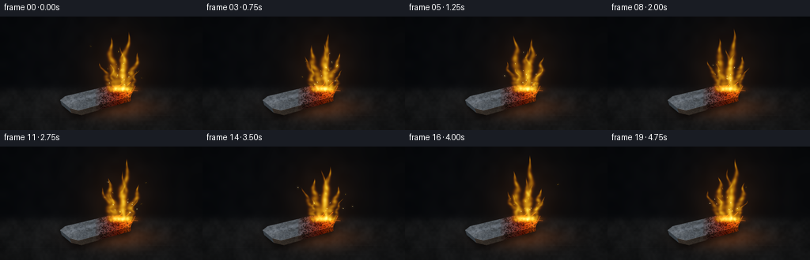
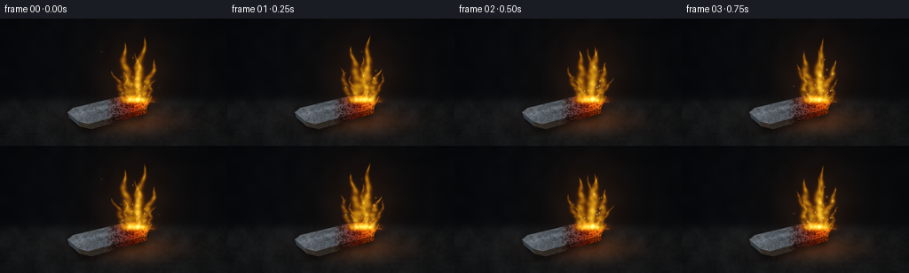

CODING AGENTS AS PIXEL WORLD MODELS
traex/GPT-6.1-Sol · material_0010
点击播放 · 原生 RGB 像素
逐轮保存的候选
回放视频、检查图与代码变化。
每份候选均可单独播放。实际图片检查记录在下方工具轨迹中。
候选 01播放与检查图
点击播放 · 原生 RGB 像素


展开代码变化
--- 上一保存版本
+++ 本次保存版本
@@ -0,0 +1,191 @@
+from pathlib import Path
+import numpy as np
+from PIL import Image, ImageDraw, ImageFilter
+import artifact_io
+
+ROOT=Path(__file__).resolve().parent
+W,H=256,144
+S=3
+SW,SH=W*S,H*S
+Y,X=np.mgrid[0:SH,0:SW].astype(np.float32)
+X/=S; Y/=S
+rng=np.random.default_rng(37281)
+
+def blurred_noise(w,h,scale,seed):
+ r=np.random.default_rng(seed)
+ a=r.random((max(2,int(h/scale)),max(2,int(w/scale)))).astype(np.float32)
+ im=Image.fromarray(a,'F').resize((w,h),Image.Resampling.BICUBIC)
+ return np.asarray(im)
+
+fine=rng.normal(0,1,(SH,SW)).astype(np.float32)
+n1=blurred_noise(SW,SH,32,101)
+n2=blurred_noise(SW,SH,9,42)
+n3=blurred_noise(SW,SH,3,845)
+# Quiet, nearly black workshop background; focus falls on the glowing metal.
+bg=np.zeros((SH,SW,3),np.float32)
+bg[:]=[7.5,10,13.5]
+bg+=((n1-.5)*3)[...,None]
+bg+=np.exp(-((X-159)/100)**2-((Y-64)/95)**2)[...,None]*np.array([6,3,0.4])
+# Slightly out-of-focus refractory work surface.
+ground=1/(1+np.exp(-(Y-92)/2.7))
+grain=(n1-.5)*9+(n2-.5)*5+fine*.7
+bg=bg*(1-ground[...,None])+(np.array([24,25,26])+grain[...,None])*ground[...,None]
+# Subtle horizontal material scratches, deliberately not a distracting tiled floor.
+for k in range(24):
+ y0=rng.uniform(103,145); x0=rng.uniform(-20,240); length=rng.uniform(12,90)
+ line=np.exp(-((Y-y0-.009*(X-x0))/rng.uniform(.16,.38))**2)
+ line*=np.exp(-((X-x0)/length)**6)
+ bg+=line[...,None]*np.array([1.6,1.7,1.8])
+# Macro depth-of-field and vignette.
+vig=np.clip(1-.32*((X-132)/158)**2-.26*((Y-78)/112)**2,.35,1)
+bg*=vig[...,None]
+
+def polymask(points):
+ im=Image.new('L',(SW,SH)); d=ImageDraw.Draw(im)
+ d.polygon([(int(x*S),int(y*S)) for x,y in points],fill=255)
+ return np.asarray(im,dtype=np.float32)/255
+
+# A short, irregular steel/iron chip with an oxidizing, incandescent torn end.
+toppts=[(76,106),(82,101),(136,88),(151,87),(162,91),(168,95),(165,101),(99,119),(88,116)]
+frontpts=[(88,116),(99,119),(165,101),(165,107),(103,125),(90,122)]
+leftpts=[(76,106),(88,116),(90,122),(78,112)]
+top=polymask(toppts); front=polymask(frontpts); left=polymask(leftpts)
+obj=np.maximum.reduce([top,front,left])
+shadowim=Image.fromarray((obj*210).astype(np.uint8)).filter(ImageFilter.GaussianBlur(3.4*S))
+shadow=np.asarray(shadowim,dtype=np.float32)/255
+# Move the shadow down and away from the brilliant flame.
+shadow=np.roll(shadow,4*S,axis=0)
+
+# The grain runs along the metal. Flakes are irregular, never resembling wood.
+along=(X+.27*Y)
+cross=(Y+.245*X)
+metal_grain=4*np.sin(cross*8.3+np.sin(along*.48))+3*np.sin(cross*18.6+np.cos(along*.85))
+metaltex=metal_grain+(n2-.5)*26+(n3-.5)*18+fine*3
+base_metal=np.array([88,94,100])+metaltex[...,None]
+base_metal+=np.exp(-((cross-129)/1.9)**2)[...,None]*np.array([19,20,22])
+# Black oxide islands and chipped silver patches.
+oxide=np.clip((n2-.49)*3.8,0,.7)*np.clip((X-92)/56,0,1)
+base_metal*=1-oxide[...,None]
+# Detailed small-scale pitting and embedded metallic facets.
+feature=Image.new('RGBA',(SW,SH),(0,0,0,0)); fd=ImageDraw.Draw(feature)
+for k in range(160):
+ px=rng.uniform(79,163); py=rng.uniform(90,124)
+ if top[min(SH-1,int(py*S)),min(SW-1,int(px*S))]<.5: continue
+ r=rng.uniform(.18,1.6)
+ c=tuple(int(v) for v in ([132,140,144] if k%3 else [24,29,34]))+(int(rng.uniform(60,170)),)
+ fd.polygon([(int(px*S),int(py*S)),(int((px+r*2)*S),int((py-.35*r)*S)),(int((px+r)*S),int((py+.4*r)*S))],fill=c)
+feature=np.asarray(feature,dtype=np.float32)
+fa=feature[...,3:4]/255
+base_metal=base_metal*(1-fa)+feature[...,:3]*fa
+
+# A few torn fine iron strands near the reacting tip.
+strandim=Image.new('L',(SW,SH)); sd=ImageDraw.Draw(strandim)
+strands=[[(145,94),(161,87),(165,83)],[(151,99),(168,94),(171,88)],[(149,95),(160,92),(174,94)],[(143,95),(154,85),(155,81)]]
+for pts in strands: sd.line([(int(x*S),int(y*S)) for x,y in pts],fill=255,width=2)
+strand=np.asarray(strandim,dtype=np.float32)/255
+
+# Sparks have repeatable birth times and ballistic paths, rather than random-frame flicker.
+sparks=[]
+for k in range(122):
+ birth=rng.uniform(-1.3,5.1)
+ duration=rng.uniform(.48,1.38)
+ sparks.append((birth,duration,rng.uniform(145,165),rng.uniform(87,97),rng.uniform(-31,33),rng.uniform(30,69),rng.uniform(.2,.65),rng.uniform(.65,1)))
+
+def make_frame(t):
+ out=bg.copy()
+ flicker=.92+.065*np.sin(t*17.4)+.04*np.sin(t*27.9+.7)
+ # Scattered light in the dark air and diffuse reflection on the hearth.
+ halo=np.exp(-((X-152)/37)**2-((Y-69)/46)**2)
+ out+=halo[...,None]*np.array([27,11,1.3])*flicker
+ bounce=np.exp(-((X-150)/48)**2-((Y-116)/13)**2)*ground
+ out+=bounce[...,None]*np.array([47,18,2.2])*flicker
+ out*=1-shadow[...,None]*.65
+ heat=np.clip((X-117)/45,0,1)**1.6
+ heat*=.89+.06*np.sin(t*5+X*.12)+.05*n2
+ # Cold half remains silver gray; hot torn tip is a deep orange red.
+ hotcolor=np.zeros_like(out)
+ hotcolor[...,0]=110+137*heat
+ hotcolor[...,1]=16+104*heat**2
+ hotcolor[...,2]=4+15*heat**4
+ blend=np.clip((X-119)/35,0,1)*.94
+ mt=base_metal*(1-blend[...,None])+hotcolor*blend[...,None]
+ # Cracked oxide survives on the heated surface.
+ crack=np.clip((.47-n3)*3,0,.48)*(X>125)
+ mt*=1-crack[...,None]
+ side=mt*np.array([.58,.47,.38])
+ out=out*(1-left[...,None])+np.array([54,61,67])*left[...,None]
+ out=out*(1-front[...,None])+side*front[...,None]
+ out=out*(1-top[...,None])+mt*top[...,None]
+ # Hard-edged silver highlight along the forward bevel.
+ edgeim=Image.new('L',(SW,SH)); ed=ImageDraw.Draw(edgeim)
+ ed.line([(88*S,116*S),(99*S,119*S),(165*S,101*S)],fill=175,width=2)
+ em=np.asarray(edgeim,dtype=np.float32)/255
+ out+=em[...,None]*np.stack([35+heat*74,40+heat*22,45-heat*31],axis=-1)
+ out+=strand[...,None]*np.array([230,91,17])
+
+ # Softly luminous turbulent flame sheets. Each has a curved centerline and
+ # pinching tip, with small-scale gaps and rising wisps.
+ density=np.zeros((SH,SW),np.float32)
+ warmth=np.zeros((SH,SW),np.float32)
+ tongue_params=[(146,92,60,7.0,-8,0.5),(155,93,72,6.5,5,1.6),(161,94,45,6.1,13,2.8),
+ (140,95,41,5.0,-12,4.1),(150,92,51,6.4,9,5.0),(157,91,56,4.7,-4,3.3),
+ (164,96,31,3.4,12,6.0),(144,95,32,3.5,-6,2.0)]
+ for idx,(bx,by,length,width,lean,phase) in enumerate(tongue_params):
+ length*=1+.1*np.sin(t*6.4+phase)+.065*np.sin(t*10.1+phase*3)
+ u=(by-Y)/length
+ v=np.clip(u,0,1)
+ wiggle=(2.1*np.sin(v*7-t*9+phase)+1.15*np.sin(v*15-t*13+phase))*np.sin(v*np.pi*.85)
+ center=bx+lean*v**1.2+wiggle+2.2*np.sin(t*4+phase)*v
+ ww=width*(.28+.9*np.sin(np.pi*v)**.65)*(1-v)**.62+.11
+ dist=(X-center)/ww
+ body=np.exp(-dist**2*2.0)
+ body*=np.clip(u*12+.9,0,1)*np.clip((1-u)*13,0,1)*(u>-.035)
+ flow=.73+.17*np.sin(u*24-t*15+phase+dist*2)+.13*np.sin(u*47-t*21+phase*2)
+ body*=np.clip(flow,.18,1.1)
+ density+=body*(.64 if idx<3 else .4)
+ warmth+=body*(.8+v*.8)
+ # Bright granular seat of the reaction on the iron, rather than a candle wick.
+ foot=np.exp(-((X-153)/12.6)**2-((Y-92)/3.3)**2)
+ density+=foot*1.25
+ # Use a fire palette with gold-white cores and deep tangerine edge transparency.
+ a=1-np.exp(-density*1.8)
+ core=np.clip(density/1.65,0,1)
+ fire=np.stack([255+core*5,73+176*core**.52,4+164*core**2.6],axis=-1)
+ out=out*(1-a[...,None])+fire*a[...,None]
+ # Bloom from white-hot regions, computed independently so fine contours remain.
+ lum=np.clip(density-.28,0,None)
+ lim=Image.fromarray(lum.astype(np.float32),'F')
+ bloom=np.asarray(lim.filter(ImageFilter.GaussianBlur(2.3*S))) if False else None
+ # Pillow float image GaussianBlur is unsupported: blur a normalized L image.
+ glow_src=Image.fromarray(np.uint8(np.clip(lum/2,0,1)*255))
+ glow=np.asarray(glow_src.filter(ImageFilter.GaussianBlur(2.5*S)),dtype=np.float32)/255
+ glow2=np.asarray(glow_src.filter(ImageFilter.GaussianBlur(8*S)),dtype=np.float32)/255
+ out+=glow[...,None]*np.array([63,34,7])+glow2[...,None]*np.array([31,12,1])
+ # Crisp combustion sparks and a few tiny hot pellets on the surface.
+ spark_im=Image.new('RGB',(SW,SH)); sp=ImageDraw.Draw(spark_im)
+ for birth,life,x0,y0,vx,vy,rad,bright in sparks:
+ age=t-birth
+ if not 0<age<life: continue
+ px=x0+vx*age+2*np.sin(age*7+x0)
+ py=y0-vy*age+18*age**2
+ if py<7 or px<5 or px>250: continue
+ fade=np.sin(np.pi*min(age/life,.99))**.32*bright
+ # Exposure-length streak follows the actual particle trajectory.
+ dt=.015+.025*age/life
+ qx=x0+vx*(age-dt)+2*np.sin((age-dt)*7+x0)
+ qy=y0-vy*(age-dt)+18*(age-dt)**2
+ col=(int(255*fade),int((177+60*(1-age/life))*fade),int(93*(1-age/life)*fade))
+ sp.line([(int(qx*S),int(qy*S)),(int(px*S),int(py*S))],fill=col,width=max(1,int(rad*S)))
+ if rad>.43:
+ sp.ellipse([int((px-.3)*S),int((py-.3)*S),int((px+.3)*S),int((py+.3)*S)],fill=(int(255*fade),int(243*fade),int(185*fade)))
+ sa=np.asarray(spark_im,dtype=np.float32)
+ sg=np.asarray(spark_im.filter(ImageFilter.GaussianBlur(1.2*S)),dtype=np.float32)
+ out+=sa+sg*.8
+ # Slight sensor grain and highlight compression, then supersampled resolve.
+ out=np.clip(out,0,255)
+ im=Image.fromarray(out.astype(np.uint8)).resize((W,H),Image.Resampling.LANCZOS)
+ return np.asarray(im,dtype=np.uint8)
+
+frames=np.stack([make_frame(i/4) for i in range(20)])
+artifact_io.save(frames,ROOT)
+print('Saved',frames.shape,'RGB video to',ROOT)
可观测工具轨迹
实际执行的命令与返回图片。
命令 1exit 0
/bin/bash -lc 'ls -la && cat prompt.txt && cat GENERATION_RULES.md && cat task_spec.json'
命令 2exit 0
/bin/bash -lc 'cat artifact_io.py'
命令 3exit 0
/bin/bash -lc "cat > generate.py <<'PY'
from pathlib import Path
import numpy as np
from PIL import Image, ImageDraw, ImageFilter
import artifact_io
ROOT=Path(__file__).resolve().parent
W,H=256,144
S=3
SW,SH=W*S,H*S
Y,X=np.mgrid[0:SH,0:SW].astype(np.float32)
X/=S; Y/=S
rng=np.random.default_rng(37281)
def blurred_noise(w,h,scale,seed):
r=np.random.default_rng(seed)
a=r.random((max(2,int(h/scale)),max(2,int(w/scale)))).astype(np.float32)
im=Image.fromarray(a,'F').resize((w,h),Image.Resampling.BICUBIC)
return np.asarray(im)
fine=rng.normal(0,1,(SH,SW)).astype(np.float32)
n1=blurred_noise(SW,SH,32,101)
n2=blurred_noise(SW,SH,9,42)
n3=blurred_noise(SW,SH,3,845)
# Quiet, nearly black workshop background; focus falls on the glowing metal.
bg=np.zeros((SH,SW,3),np.float32)
bg[:]=[7.5,10,13.5]
bg+=((n1-.5)*3)[...,None]
bg+=np.exp(-((X-159)/100)**2-((Y-64)/95)**2)[...,None]*np.array([6,3,0.4])
# Slightly out-of-focus refractory work surface.
ground=1/(1+np.exp(-(Y-92)/2.7))
grain=(n1-.5)*9+(n2-.5)*5+fine*.7
bg=bg*(1-ground[...,None])+(np.array([24,25,26])+grain[...,None])*ground[...,None]
# Subtle horizontal material scratches, deliberately not a distracting tiled floor.
for k in range(24):
y0=rng.uniform(103,145); x0=rng.uniform(-20,240); length=rng.uniform(12,90)
line=np.exp(-((Y-y0-.009*(X-x0))/rng.uniform(.16,.38))**2)
line*=np.exp(-((X-x0)/length)**6)
bg+=line[...,None]*np.array([1.6,1.7,1.8])
# Macro depth-of-field and vignette.
vig=np.clip(1-.32*((X-132)/158)**2-.26*((Y-78)/112)**2,.35,1)
bg*=vig[...,None]
def polymask(points):
im=Image.new('L',(SW,SH)); d=ImageDraw.Draw(im)
d.polygon([(int(x*S),int(y*S)) for x,y in points],fill=255)
return np.asarray(im,dtype=np.float32)/255
# A short, irregular steel/iron chip with an oxidizing, incandescent torn end.
toppts=[(76,106),(82,101),(136,88),(151,87),(162,91),(168,95),(165,101),(99,119),(88,116)]
frontpts=[(88,116),(99,119),(165,101),(165,107),(103,125),(90,122)]
leftpts=[(76,106),(88,116),(90,122),(78,112)]
top=polymask(toppts); front=polymask(frontpts); left=polymask(leftpts)
obj=np.maximum.reduce([top,front,left])
shadowim=Image.fromarray((obj*210).astype(np.uint8)).filter(ImageFilter.GaussianBlur(3.4*S))
shadow=np.asarray(shadowim,dtype=np.float32)/255
# Move the shadow down and away from the brilliant flame.
shadow=np.roll(shadow,4*S,axis=0)
# The grain runs along the metal. Flakes are irregular, never resembling wood.
along=(X+.27*Y)
cross=(Y+.245*X)
metal_grain=4*np.sin(cross*8.3+np.sin(along*.48))+3*np.sin(cross*18.6+np.cos(along*.85))
metaltex=metal_grain+(n2-.5)*26+(n3-.5)*18+fine*3
base_metal=np.array([88,94,100])+metaltex[...,None]
base_metal+=np.exp(-((cross-129)/1.9)**2)[...,None]*np.array([19,20,22])
# Black oxide islands and chipped silver patches.
oxide=np.clip((n2-.49)*3.8,0,.7)*np.clip((X-92)/56,0,1)
base_metal*=1-oxide[...,None]
# Detailed small-scale pitting and embedded metallic facets.
feature=Image.new('RGBA',(SW,SH),(0,0,0,0)); fd=ImageDraw.Draw(feature)
for k in range(160):
px=rng.uniform(79,163); py=rng.uniform(90,124)
if top[min(SH-1,int(py*S)),min(SW-1,int(px*S))]<.5: continue
r=rng.uniform(.18,1.6)
c=tuple(int(v) for v in ([132,140,144] if k%3 else [24,29,34]))+(int(rng.uniform(60,170)),)
fd.polygon([(int(px*S),int(py*S)),(int((px+r*2)*S),int((py-.35*r)*S)),(int((px+r)*S),int((py+.4*r)*S))],fill=c)
feature=np.asarray(feature,dtype=np.float32)
fa=feature[...,3:4]/255
base_metal=base_metal*(1-fa)+feature[...,:3]*fa
# A few torn fine iron strands near the reacting tip.
strandim=Image.new('L',(SW,SH)); sd=ImageDraw.Draw(strandim)
strands=[[(145,94),(161,87),(165,83)],[(151,99),(168,94),(171,88)],[(149,95),(160,92),(174,94)],[(143,95),(154,85),(155,81)]]
for pts in strands: sd.line([(int(x*S),int(y*S)) for x,y in pts],fill=255,width=2)
strand=np.asarray(strandim,dtype=np.float32)/255
# Sparks have repeatable birth times and ballistic paths, rather than random-frame flicker.
sparks=[]
for k in range(122):
birth=rng.uniform(-1.3,5.1)
duration=rng.uniform(.48,1.38)
sparks.append((birth,duration,rng.uniform(145,165),rng.uniform(87,97),rng.uniform(-31,33),rng.uniform(30,69),rng.uniform(.2,.65),rng.uniform(.65,1)))
def make_frame(t):
out=bg.copy()
flicker=.92+.065*np.sin(t*17.4)+.04*np.sin(t*27.9+.7)
# Scattered light in the dark air and diffuse reflection on the hearth.
halo=np.exp(-((X-152)/37)**2-((Y-69)/46)**2)
out+=halo[...,None]*np.array([27,11,1.3])*flicker
bounce=np.exp(-((X-150)/48)**2-((Y-116)/13)**2)*ground
out+=bounce[...,None]*np.array([47,18,2.2])*flicker
out*=1-shadow[...,None]*.65
heat=np.clip((X-117)/45,0,1)**1.6
heat*=.89+.06*np.sin(t*5+X*.12)+.05*n2
# Cold half remains silver gray; hot torn tip is a deep orange red.
hotcolor=np.zeros_like(out)
hotcolor[...,0]=110+137*heat
hotcolor[...,1]=16+104*heat**2
hotcolor[...,2]=4+15*heat**4
blend=np.clip((X-119)/35,0,1)*.94
mt=base_metal*(1-blend[...,None])+hotcolor*blend[...,None]
# Cracked oxide survives on the heated surface.
crack=np.clip((.47-n3)*3,0,.48)*(X>125)
mt*=1-crack[...,None]
side=mt*np.array([.58,.47,.38])
out=out*(1-left[...,None])+np.array([54,61,67])*left[...,None]
out=out*(1-front[...,None])+side*front[...,None]
out=out*(1-top[...,None])+mt*top[...,None]
# Hard-edged silver highlight along the forward bevel.
edgeim=Image.new('L',(SW,SH)); ed=ImageDraw.Draw(edgeim)
ed.line([(88*S,116*S),(99*S,119*S),(165*S,101*S)],fill=175,width=2)
em=np.asarray(edgeim,dtype=np.float32)/255
out+=em[...,None]*np.stack([35+heat*74,40+heat*22,45-heat*31],axis=-1)
out+=strand[...,None]*np.array([230,91,17])
# Softly luminous turbulent flame sheets. Each has a curved centerline and
# pinching tip, with small-scale gaps and rising wisps.
density=np.zeros((SH,SW),np.float32)
warmth=np.zeros((SH,SW),np.float32)
tongue_params=[(146,92,60,7.0,-8,0.5),(155,93,72,6.5,5,1.6),(161,94,45,6.1,13,2.8),
(140,95,41,5.0,-12,4.1),(150,92,51,6.4,9,5.0),(157,91,56,4.7,-4,3.3),
(164,96,31,3.4,12,6.0),(144,95,32,3.5,-6,2.0)]
for idx,(bx,by,length,width,lean,phase) in enumerate(tongue_params):
length*=1+.1*np.sin(t*6.4+phase)+.065*np.sin(t*10.1+phase*3)
u=(by-Y)/length
v=np.clip(u,0,1)
wiggle=(2.1*np.sin(v*7-t*9+phase)+1.15*np.sin(v*15-t*13+phase))*np.sin(v*np.pi*.85)
center=bx+lean*v**1.2+wiggle+2.2*np.sin(t*4+phase)*v
ww=width*(.28+.9*np.sin(np.pi*v)**.65)*(1-v)**.62+.11
dist=(X-center)/ww
body=np.exp(-dist**2*2.0)
body*=np.clip(u*12+.9,0,1)*np.clip((1-u)*13,0,1)*(u>-.035)
flow=.73+.17*np.sin(u*24-t*15+phase+dist*2)+.13*np.sin(u*47-t*21+phase*2)
body*=np.clip(flow,.18,1.1)
density+=body*(.64 if idx<3 else .4)
warmth+=body*(.8+v*.8)
# Bright granular seat of the reaction on the iron, rather than a candle wick.
foot=np.exp(-((X-153)/12.6)**2-((Y-92)/3.3)**2)
density+=foot*1.25
# Use a fire palette with gold-white cores and deep tangerine edge transparency.
a=1-np.exp(-density*1.8)
core=np.clip(density/1.65,0,1)
fire=np.stack([255+core*5,73+176*core**.52,4+164*core**2.6],axis=-1)
out=out*(1-a[...,None])+fire*a[...,None]
# Bloom from white-hot regions, computed independently so fine contours remain.
lum=np.clip(density-.28,0,None)
lim=Image.fromarray(lum.astype(np.float32),'F')
bloom=np.asarray(lim.filter(ImageFilter.GaussianBlur(2.3*S))) if False else None
# Pillow float image GaussianBlur is unsupported: blur a normalized L image.
glow_src=Image.fromarray(np.uint8(np.clip(lum/2,0,1)*255))
glow=np.asarray(glow_src.filter(ImageFilter.GaussianBlur(2.5*S)),dtype=np.float32)/255
glow2=np.asarray(glow_src.filter(ImageFilter.GaussianBlur(8*S)),dtype=np.float32)/255
out+=glow[...,None]*np.array([63,34,7])+glow2[...,None]*np.array([31,12,1])
# Crisp combustion sparks and a few tiny hot pellets on the surface.
spark_im=Image.new('RGB',(SW,SH)); sp=ImageDraw.Draw(spark_im)
for birth,life,x0,y0,vx,vy,rad,bright in sparks:
age=t-birth
if not 0<age<life: continue
px=x0+vx*age+2*np.sin(age*7+x0)
py=y0-vy*age+18*age**2
if py<7 or px<5 or px>250: continue
fade=np.sin(np.pi*min(age/life,.99))**.32*bright
# Exposure-length streak follows the actual particle trajectory.
dt=.015+.025*age/life
qx=x0+vx*(age-dt)+2*np.sin((age-dt)*7+x0)
qy=y0-vy*(age-dt)+18*(age-dt)**2
col=(int(255*fade),int((177+60*(1-age/life))*fade),int(93*(1-age/life)*fade))
sp.line([(int(qx*S),int(qy*S)),(int(px*S),int(py*S))],fill=col,width=max(1,int(rad*S)))
if rad>.43:
sp.ellipse([int((px-.3)*S),int((py-.3)*S),int((px+.3)*S),int((py+.3)*S)],fill=(int(255*fade),int(243*fade),int(185*fade)))
sa=np.asarray(spark_im,dtype=np.float32)
sg=np.asarray(spark_im.filter(ImageFilter.GaussianBlur(1.2*S)),dtype=np.float32)
out+=sa+sg*.8
# Slight sensor grain and highlight compression, then supersampled resolve.
out=np.clip(out,0,255)
im=Image.fromarray(out.astype(np.uint8)).resize((W,H),Image.Resampling.LANCZOS)
return np.asarray(im,dtype=np.uint8)
frames=np.stack([make_frame(i/4) for i in range(20)])
artifact_io.save(frames,ROOT)
print('Saved',frames.shape,'RGB video to',ROOT)
PY
python generate.py"命令 4exit 0
/bin/bash -lc "python - <<'PY'
from pathlib import Path
import numpy as np
from PIL import Image
p=Path('.')
a=np.load('pixels.npz')['pixels']
assert a.shape == (144,256,20)
assert len(list(Path('frames').glob('*.png'))) == 20
assert all(Image.open(f'frames/{i:02d}.png').size == (256,144) for i in range(20))
print('Validated: 20 RGB frames, 256x144; packed tensor', a.shape)
for name in ['generate.py','pixels.npz','index.html','inspection.png','transition_check.png']:
print(name, p.joinpath(name).stat().st_size)
PY
command -v ffmpeg || true"保存候选 1 份；完成命令 4 次；可验证图片返回 0 张。原始 API 响应与完整日志保留在本地。